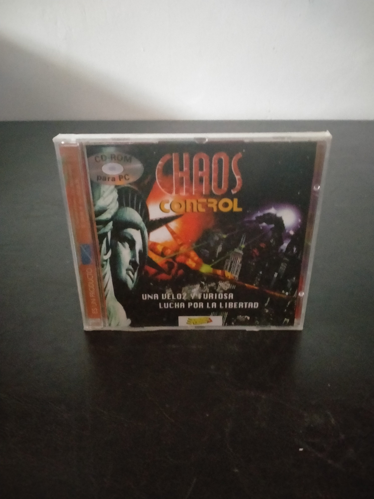

Ficha #000000
Chaos Control
Chaos Control es un videojuego de acción y ciencia ficción publicado originalmente a mediados de los años noventa, durante el auge del CD-ROM multimedia. El jugador participa en una guerra contra una fuerza alienígena que amenaza la Tierra, recorriendo secuencias predeterminadas mientras apunta y dispara contra naves, criaturas y objetivos que aparecen en pantalla. Su diseño combina shooter sobre raíles, animaciones prerenderizadas, vídeo digital y escenas de estética cinematográfica, con una ambientación futurista centrada en la defensa de ciudades como Nueva York. Técnicamente representa una etapa en la que numerosas producciones europeas utilizaron el aumento de capacidad del CD-ROM para integrar vídeo de movimiento completo, voces digitalizadas y secuencias tridimensionales. Esta edición física para PC en caja jewel case presenta textos comerciales en castellano y constituye un ejemplo representativo de las reediciones económicas y distribuciones compactas de juegos multimedia de la década de 1990.
- Formato
- Jewel Case
- Plataforma
- MsDos Win3.x
- Género
- Shooter sobre raíles Acción Ciencia ficción FMV
- Serie
- Todos Jewel Case
- Desarrollador
- Infogrames Multimedia
- Distribuidor
- Infogrames Multimedia
- EAN
- —
Contenido de la edición
- Caja jewel case
- CD-ROM
- Carátula impresa
Preservación
- Protección
- No determinado
- Formato recomendado
- BIN/CUE
- Jugable en virtualización
- Sí
Se recomienda crear una imagen completa del CD-ROM en formato BIN/CUE para conservar posibles pistas de datos o audio, verificarla mediante sumas de comprobación y digitalizar las carátulas de la edición. La ejecución virtual resulta viable mediante un entorno MS-DOS o Windows 3.x correctamente configurado, aunque pueden ser necesarios ajustes de vídeo, sonido y velocidad.